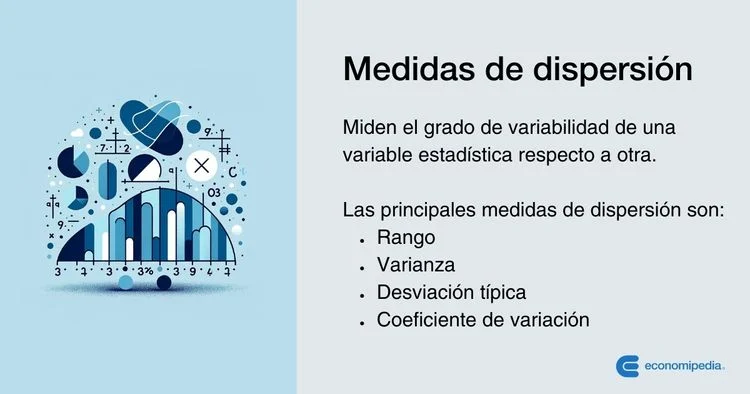

Medidas de Dispersión
Las medidas de dispersión proporcionan información sobre la variabilidad o extensión de los datos en torno a la medida de tendencia central. Las principales medidas de dispersión incluyen el rango, la varianza y la desviación estándar. El rango es la diferencia entre el valor máximo y el valor mínimo en el conjunto de datos. La varianza mide el promedio de las desviaciones cuadráticas respecto a la media, y la desviación estándar es la raíz cuadrada de la varianza, proporcionando una medida de dispersión en las mismas unidades que los datos originales. Estas medidas ayudan a entender cómo se distribuyen los datos alrededor del centro.
